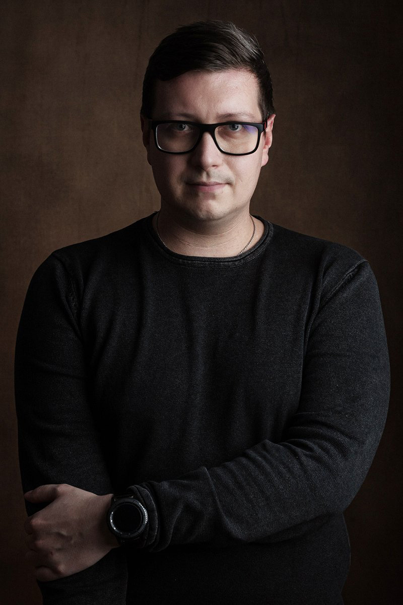

Meine Reise in die Welt der Fotografie begann in der Landschaftsfotografie, wo ich die Stille und die unberührte Natur genoss, und dies half mir, meine persönlichen Batterien aufzuladen. Doch bald fühlte ich den Wunsch, mit Menschen
zusammenzuarbeiten, was mich zur Portraitfotografie führte. Heute bin ich hier, und ich schätze den schier endlosen Facettenreichtum meiner Models und ihre ungebremste Leidenschaft für das Leben. Jede Fotosession wird so zu einem
unvergesslichen Erlebnis. Die Geschichten, die sich hinter den Gesichtern meiner Kunden verbergen, faszinieren mich und bilden das Herzstück unserer großartigen Zusammenarbeit.
Mit meiner ausgeprägten Empathie gelingt es mir mühelos, eine entspannte und angenehme Atmosphäre zu schaffen, in der sich jeder wohl fühlt, sei es vor oder hinter der Kamera. Die Welt der professionellen Fotografie begleitet
mich schon seit vielen Jahren. Meine Kamera ist nicht nur ein ständiger Begleiter im Alltag, sondern auch mein Werkzeug, um die Schönheit in allen Lebenslagen festzuhalten. Denn let's face it, wir alle möchten auf Bildern von unserer
besten Seite gezeigt werden, nicht wahr? Sich professionell ablichten zu lassen, ist jedoch eine ganz neue Herausforderung, die ich leidenschaftlich gerne annehme.
